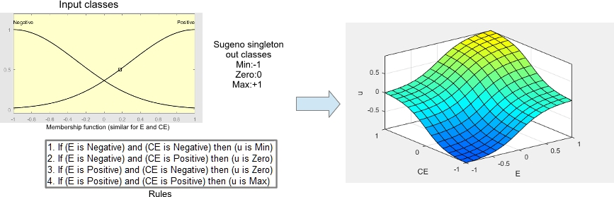
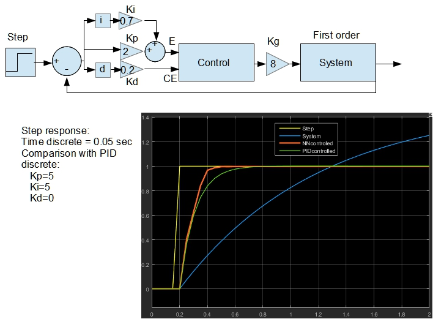
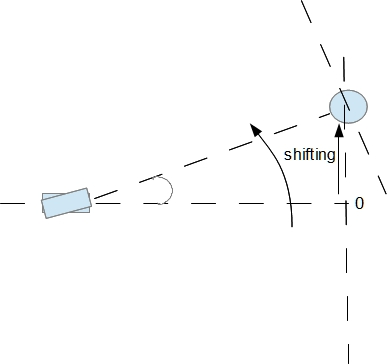
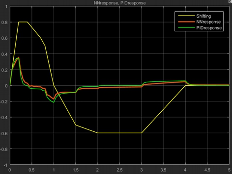

A Fuzzy controller is often recently used in place of classical PID controller for small systems. With this approach the control signal is relied on a bi-dimensional and non-linear function of error and its change at each step of control cycle (a sort of derivative). So, way don't use a Neural Network to simulate this function? For this purpose we have to tabulate this function in terms of normalized approach. We can use Fuzzy system to define simple classes for error (E) and error change (CE), and simple rules to define the behaviour. For example, using MATLAB we can define a Fuzzy system with two classes for E and CE like:

Now we can print this surface (with a resolution 50x50 = 2500 examples) and we can use this file of example to train a NN to approximate this function. We use a NN defined as:
NNet net(2,2,"NodeTanh",1,"NodeLin");
and after 1000000 training cycles we measure a error < 10-5. That means that surface is coincident.
So, we can use this a controller like this:
#include "NNet.h"
const PROGMEM struct
{
int dimin=2;
int dimhi=2;
int dimou=1;
int fun1=2;
int fun2=0;
float wgt10[2][2]=
{{0.0031, -2.0110},{-2.0180, 0.0037}};
float wgt21[1][2]=
{{-0.5035 , -0.5028 }};
}pnet;
float inp[2];
NNPGM p; //p is the pointer to PROGMEM NN structure
void setup() {
Serial.begin(9600);
p=NNet::initNetPROGMEM(&pnet,false,false); // initialize PROGMEM NN structure
:
:
}
void loop() {
//put here your control
}
float control(float inp[2]) // control routine
{
float out[1];
NNet::forwPROGMEM(p,inp,out); // execution time = 0.508 millis
return out[0];
}
You can adapt this controller with a Kp,Kd and Kg multiplier constant. Kp for E, Kd for CE and Kg for control signal.
Because a possible steady state error, you can add a fraction of cumulative (i.e. integral) error to E.
float sx=0;
float control(float x,float dx,float kp,float ki,float kd)
{
sx=sx+x;
inp[0]=x*kp+sx*hi;
inp[1]=dx*kd;
NNet::forwPROGMEM(p,inp,out);
return out[0];
}

Example of a simulate tracking (only one dimension) using a first order system (PB) + non-linearities:( Saturation (-70° +70°) and tan function)

Kp=2
Kd=0.3
Ki=0.7
Kg=270